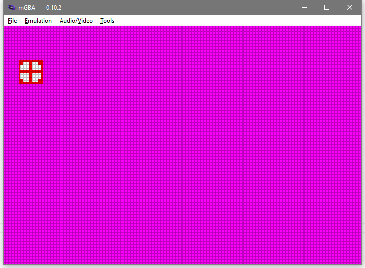

Objects / Sprites
Now that we can get user input there's a lot of things that we could learn about next. Probably we should focus on how to improve our drawing abilities.
Most of the GBA's drawing abilities involve either the 4 background layers, or the 128 objects (called "OBJ" for short). The background layers let you draw a few "big" things (128x128 or bigger), and the objects let you draw many "small" things (64x64 or less).
The objects have a fairly consistent behavior, while the four background layers behave differently depending on the "video mode" that you set in the display control. That's reason enough to focus on the objects first.
Are They Objects Or Are They Sprites?
The objects are sometimes called "sprites". GBATEK calls them objects, and mGBA (v0.10 at least) calls them sprites. Some people care about the difference between the two terms, but I don't. I'm just going to say "object" most of the time in this series because the data for them is called the "object active memory".
Display Control
We've already seen that the display control has a "forced blank" bit. Most of the other bits are for background control stuff, but since some of them affect object display we'll just cover that right now.
| Bit(s) | Setting |
|---|---|
| 0-2 | Video Mode |
| 3 | (Unused in GBA mode) |
| 4 | Frame Select |
| 5 | Unlocked H-blank |
| 6 | Linear object tile mapping |
| 7 | Forced Blank |
| 8 | Enable Background 0 |
| 9 | Enable Background 1 |
| 10 | Enable Background 2 |
| 11 | Enable Background 3 |
| 12 | Enable Objects |
| 13 | Window 0 Display Flag |
| 14 | Window 1 Display Flag |
| 15 | OBJ Window Display Flag |
- Video Mode: This sets which mode the four background layers will operate with. Despite this being a 3-bit field, only modes 0 through 5 give a useful display. Modes 6 and 7 cause garbage output.
- Frame Select: Affects which bitmap frame is used in video mode 4 or 5.
- Unlocked H-blank: GBATEK calls this "H-Blank Interval Free", and mGBA's debug controls call this "Unlocked H-blank". This bit affects what you can do during the "horizontal blank" time between each scanline being shown, but when it's on fewer objects can be drawn. We won't be doing any per-scanline drawing for now, so we'll leave it off by default.
- Linear object tile mapping: This affects how we lay out the tiles for multi-tile objects. We'll talk about the details of this in just a moment.
- Forced Blank: Hey we know about this bit. When it's on, the display won't access any memory and will just output white pixels any time it would have rendered a pixel normally.
- Enable Background: These four bits set if we want each of the four background layers on. For now we don't care.
- Enable Objects: This bit sets the objects to be displayed.
- Window Flags: These three bits affect the "window" special graphical feature. We'll ignore these bits for now.
I'm going to use the bitfrob crate to get some bit manipulation utilities.
> cargo add bitfrob
Updating crates.io index
Adding bitfrob v1.3.0 to dependencies.
Features:
- track_caller
Updating crates.io index
Now we can give a type to our display control value, as well as just enough methods to get started.
Unlike with our Color type, with the DisplayControl we want to completely prevent an invalid video mode from being set, so we'll keep the u16 that we're wrapping as a private field.
Then we just have one "builder" method for each bit or group of bits that we want to be able to change.
To start we can skip all the background related bits, so we'll only need three builders.
#![allow(unused)] fn main() { // in lib.rs use bitfrob::u16_with_bit; pub const DISPCNT: VolAddress<DisplayControl, Safe, Safe> = unsafe { VolAddress::new(0x0400_0000) }; #[derive(Clone, Copy, PartialEq, Eq)] #[repr(transparent)] pub struct DisplayControl(u16); impl DisplayControl { #[inline] pub const fn new() -> Self { Self(0) } #[inline] pub const fn with_linear_obj_tiles(self, linear: bool) -> Self { Self(u16_with_bit(6, self.0, linear)) } #[inline] pub const fn with_forced_blank(self, blank: bool) -> Self { Self(u16_with_bit(7, self.0, blank)) } #[inline] pub const fn with_objects(self, objects: bool) -> Self { Self(u16_with_bit(12, self.0, objects)) } } }
This will require updates to both ex2.rs and ex3.rs.
- For example 2, instead of writing
0we'd writeDisplayControl::new()instead. - For example 3, we want to enable object display, since we're about to start showing some objects.
// in ex3.rs const JUST_SHOW_OBJECTS: DisplayControl = DisplayControl::new().with_objects(true); #[no_mangle] pub extern "C" fn main() -> ! { DISPCNT.write(JUST_SHOW_OBJECTS); loop { let k = KEYINPUT.read(); BACKDROP.write(if k.a() { Color::RED } else { Color::GREEN }) } }
For now that's all we need to do for the display control.
Object Palette
Objects always need to use "paletted" color. Instead of each pixel within the object's image holding a full color value, it just holds an index into the palette. This allows each pixel to only need 4 or 8 bits each, instead of the 16 bits needed for a complete color.
The palette for objects starts at 0x0500_0200, and it's 256 entries long.
Each object can use 8 bits per pixel (8bpp) or 4 bits per pixel (4bpp).
- When an object is set for 8bpp each non-zero pixel value is the 8-bit index into the object palette. A pixel value of 0 means that the object is transparent in that pixel. This allows for up to 255 colors to be used within a single object.
- When an object is set for 4bpp each non-zero pixel value is the low half of the full index value. A second setting within the object's attributes determine the upper half of the index value. This effectively splits the palette memory into 16 "palbank" groupings. As with 8bpp objects, a pixel value of 0 makes a transparent pixel. This allows for up to 15 colors within a single object.
You might notice that index 0 of the object palette isn't ever used by either mode. The memory itself exists for consistency, but the GBA will never use the color value in that position. Call it a free global variable for your own personal use, if you want.
Since we have a series of color values instead of just a single color value,
this time we'll declare the object palette as a VolBlock instead of a VolAddress.
#![allow(unused)] fn main() { // in lib.rs pub const OBJ_PALETTE: VolBlock<Color, Safe, Safe, 256> = unsafe { VolBlock::new(0x0500_0200) }; }
A VolBlock works mostly like an array does.
We call OBJ_PALETTE.index(i) to get a particular VolAddress, and then we can read or write that address.
We could also use get if we want to do an optional lookup, or we could iterate the block, etc.
First let's make some more named color constants. We'll name each of the 8 colors you get when each of the three color channels is either no-intensity or full-intensity.
#![allow(unused)] fn main() { // in lib.rs impl Color { pub const BLACK: Self = Self::rgb(0, 0, 0); pub const BLUE: Self = Self::rgb(0, 0, 31); pub const GREEN: Self = Self::rgb(0, 31, 0); pub const CYAN: Self = Self::rgb(0, 31, 31); pub const RED: Self = Self::rgb(31, 0, 0); pub const MAGENTA: Self = Self::rgb(31, 0, 31); pub const YELLOW: Self = Self::rgb(31, 31, 0); pub const WHITE: Self = Self::rgb(31, 31, 31); // ... } }
Now we can set up a backdrop color and two different palette entries.
// in ex3.rs #[no_mangle] pub extern "C" fn main() -> ! { BACKDROP.write(Color::MAGENTA); OBJ_PALETTE.index(1).write(Color::RED); OBJ_PALETTE.index(2).write(Color::WHITE); DISPCNT.write(JUST_SHOW_OBJECTS); loop {} }
If we run the example in mGBA we can check our work using the debug utilities. In the menu, "Tools -> Game State Views -> View Palette..." will open a dialog showing all the background and object palette info.
- The backdrop color will show up in the 0th entry of the background palette.
- The two object palette colors will be in positions 1 and 2 of the top row.
Each row of the palette is shown 16 colors at a time, so it's easy to tell what's happening in both 8bpp and 4bpp modes.
That should be enough palette setup to continue with the tutorial.
Object Tile Memory
First, what is a tile exactly:
- A tile is an 8x8 square of palette indexes.
- A palette index can be either 4 bits per pixel (4bpp) or 8 bits per pixel (8bpp). This is the "bit depth" of the indexes.
- The indexes store one row at a time, left to right, top to bottom.
So we might have the following Rust constants
#![allow(unused)] fn main() { // in lib.rs pub const PIXELS_PER_TILE: usize = 8 * 8; pub const BITS_PER_BYTE: usize = 8; pub const SIZE_OF_TILE4: usize = (PIXELS_PER_TILE * 4) / BITS_PER_BYTE; pub const SIZE_OF_TILE8: usize = (PIXELS_PER_TILE * 8) / BITS_PER_BYTE; }
Also, there's 32K of object tile RAM.
#![allow(unused)] fn main() { // in lib.rs macro_rules! kilobytes { ($bytes:expr) => { $bytes * 1024 }; } pub const SIZE_OF_OBJ_TILE_MEM: usize = kilobytes!(32); }
Now we know how big everything is, in bytes.
However, the GBA's video memory does NOT work right with individual byte writes.
We can cover the details another time, but with video memory you always have to write in 16-bit or 32-bit chunks.
Also, the GBA is simply much faster at transferring bulk data around when it's aligned to 4.
Data aligned to 4 can be copied one or more u32 values at time (one or more "words" in ARM terms).
Being more aligned than 4 doesn't help any extra, but we want to have at least alignment 4 with anything big.
Tiles, particularly if we've got dozens or hundreds of them, count as "big enough to care about alignment".
This means that instead of modeling tile data as being arrays of u8, we'll use smaller arrays of u32, which will keep the data aligned to 4.
#![allow(unused)] fn main() { // in lib.rs pub const SIZE_OF_U32: usize = core::mem::size_of::<u32>(); pub const TILE4_WORD_COUNT: usize = SIZE_OF_TILE4 / SIZE_OF_U32; pub const TILE8_WORD_COUNT: usize = SIZE_OF_TILE8 / SIZE_OF_U32; pub const OBJ_TILE_MEM_WORD_COUNT: usize = SIZE_OF_OBJ_TILE_MEM / SIZE_OF_U32; }
Which lets us declare the block of u32 values where our object tile data goes.
#![allow(unused)] fn main() { // in lib.rs pub const OBJ_TILES_U32: VolBlock<u32, Safe, Safe, OBJ_TILE_MEM_WORD_COUNT> = unsafe { VolBlock::new(0x0601_0000) }; }
Here's where things get kinda weird. An object's attributes (most of which we'll cover lower down) include a "Tile ID" for the base tile of the object. These tile id values are used as a 32 byte index, regardless of if the object uses 4bpp or 8bpp drawing. This means that they line up perfectly with a 4bpp view of the tile data, and we get 1024 IDs.
#![allow(unused)] fn main() { // in lib.rs pub type Tile4 = [u32; TILE4_WORD_COUNT]; pub const OBJ_TILE4: VolBlock<Tile4, Safe, Safe, 1024> = unsafe { VolBlock::new(0x0601_0000) }; }
But with 8bpp objects we end up in a pickle.
We could use a VolSeries, which is an alternative to the VolBlock type, for when the stride and the element size aren't the same.
The VolSeries type is mostly intended for when the stride is bigger than the element size, but the math will work out either way.
Note that since 8bpp tiles are twice as big we have to cut down the number of tiles from 1024 to 1023 so that using the last index doesn't go out of bounds.
#![allow(unused)] fn main() { // in lib.rs pub type Tile8 = [u32; TILE8_WORD_COUNT]; pub const OBJ_TILE8: VolSeries<Tile8, Safe, Safe, 1023, 32> = unsafe { VolSeries::new(0x0601_0000) }; }
And, well, it looks kinda weird every time I look at the code but... that's how the hardware works. It's the ultimate arbiter of what's correct, so sometimes you gotta just go with it.
We can always think about this more later, and maybe improve it then. For now it's enough that we've got the right addresses at all.
One final note: In video modes 3, 4, and 5 the lower half of the object tile region instead gets used as part of the background. In this case, only object tile index values 512 and above are usable for object display.
Object Attribute Memory
Separate from the object tile memory, there's also the Object Attribute Memory (OAM) region. This has space for 128 "attribute" entries, which defines how the objects are shown.
Each attribute needs 48 bits.
This is an unfortunate number of bits, because it's not a clean power of 2.
Normally we refer to each attribute entry as having three u16 attributes just called 0, 1, and 2.
#![allow(unused)] fn main() { #[derive(Clone, Copy, PartialEq, Eq, Default)] #[repr(transparent)] pub struct ObjAttr0(pub u16); #[derive(Clone, Copy, PartialEq, Eq, Default)] #[repr(transparent)] pub struct ObjAttr1(pub u16); #[derive(Clone, Copy, PartialEq, Eq, Default)] #[repr(transparent)] pub struct ObjAttr2(pub u16); }
In between each attribute entry is part of an affine entry.
That's right, just a part of an affine entry.
A full affine entry is four i16 values (called A, B, C, and D).
There's one i16 affine value per three u16 attribute values.
The memory looks kinda like this.
- obj0.attr0
- obj0.attr1
- obj0.attr2
- affine0.a
- obj1.attr0
- obj1.attr1
- obj1.attr2
- affine0.b
- obj2.attr0
- obj2.attr1
- obj2.attr2
- affine0.c
- obj3.attr0
- obj3.attr1
- obj3.attr2
- affine0.d
And then that pattern repeats 32 times. It's a little strange, but the hardware does what it does.
We can use use several VolSeries declarations to model this.
#![allow(unused)] fn main() { // in lib.rs pub const OBJ_ATTRS_0: VolSeries<ObjAttr0, Safe, Safe, 128, 64> = unsafe { VolSeries::new(0x0700_0000) }; pub const OBJ_ATTRS_1: VolSeries<ObjAttr1, Safe, Safe, 128, 64> = unsafe { VolSeries::new(0x0700_0000 + 2) }; pub const OBJ_ATTRS_2: VolSeries<ObjAttr2, Safe, Safe, 128, 64> = unsafe { VolSeries::new(0x0700_0000 + 4) }; }
Alternately, we could group the attributes into a single struct and view things that way.
#![allow(unused)] fn main() { // in lib.rs #[derive(Clone, Copy, PartialEq, Eq, Default)] #[repr(C)] pub struct ObjAttr(pub ObjAttr0, pub ObjAttr1, pub ObjAttr2); pub const OBJ_ATTRS: VolSeries<ObjAttr, Safe, Safe, 128, 64> = unsafe { VolSeries::new(0x0700_0000) }; }
Using the ObjAttr type and OBJ_ATTRS series would make it so that all three object attribute fields get accessed.
If you're only intending to update the position of an object (in attributes 0 and 1) without touching attribute 2, then maybe you'd care.
It's pretty unlikely to matter, but maybe.
Let's go over the actual properties within each object attribute field.
Object Attribute 0
- Bits 0 through 7 are the Y coordinate of the top-left corner of the object.
The screen is 160 pixels tall, and the coordinates wrap.
If you want something to appear to move up past the top of the screen, then wrap the Y value around.
Alternately, you can do the position math using signed values and then
ascast the value to unsigned. - Bits 8 and 9 set what mGBA calls the "transform" of the object:
- 0 is no transform.
- 1 is affine rendering. Which affine entry is used is set in attribute 1.
- 2 is no transform and the object not drawn (it's "disabled").
- 3 is just like 1 but the object is rendered with double size.
- Bits 10 and 11 set the special effect mode:
- 0 is no special effect.
- 1 is alpha blending.
- 2 is window masking. The object isn't shown, but acts as part of the object window mask.
- 3 is not allowed.
- Bit 12 sets if the object uses the Mosaic special effect. This can be enabled/disabled seprately from the other effects above.
- Bit 13 sets if the object uses 8bpp (bit set), or 4bpp (bit cleared).
- Bits 14 and 15 set the "shape" of the object. The exact dimensions also depend on the "size" set in attribute 1
- 0 is square
- 1 is wider
- 2 is taller
- 3 is not allowed.
| (WxH) | Size 0 | Size 1 | Size 2 | Size 3 |
|---|---|---|---|---|
| Shape 0 | 8x8 | 16x16 | 32x32 | 64x64 |
| Shape 1 | 16x8 | 32x8 | 32x16 | 64x32 |
| Shape 2 | 8x16 | 8x32 | 16x32 | 32x64 |
Object Attribute 1
- Bits 0 through 8 are the X coordinate of the top-left corner of the object. This works basically the same as with the Y coordinate, but the screen is 260 pixels wide so 9 bits are used.
- Bits 8 through 13 depend on if the object is using affine rendering or not.
- When affine (or double sized affine) rendering is used, they set the index of the affine entry used.
- Otherwise Bit 12 sets horizontal flip and Bit 13 set vertical flip.
- Bits 14 and 15 set the size of the sprite.
Object Attribute 2
- Bits 0 through 9 set the base tile index of the object. As mentioned above, in video modes 3, 4, and 5 this needs to be 512 or more.
- Bits 10 and 11 are the "priority" value. Lower priority objects and layers are sorted closer to the viewer, and so they are what's seen if they overlap something farther away. Within a given priority layer, objects always draw over backgrounds, and lower index objects/backgrounds draw over higher index ones.
- Bits 12 through 15 set the palette bank the object uses if it's using 4bpp.
Object Rendering Time
There's a limit to how many objects can be drawn per scanline, but it's not a specific number of objects. Instead, the OAM engine has a buffer that's as wide as the screen, and there's a time limit per scanline on filling the buffer.
- When the "Unlocked H-blank" bit is clear in
DISPCNTyou get 1210 cycles (304 * 4 - 6) - When the "Unlocked H-blank" bit is set in
DISPCNTyou get 954 cycles (240 * 4 - 6)
The number of cycles each object consumes depends on the object's horizontal size:
- Normal objects consume
widthcycles. - Affine objects consume
2 * width + 10cycles.
Objects are processed by their index order. Objects not on the current scanline, horizontally/vertically off-screen, or that are "disabled" as their attribute 0 transform, are skipped in rendering but still take two cycles to process. Even when an object won't be drawn on the current scanline the OAM engine has to look at the attributes to know that. If not all objects are handled and time runs out then any unprocessed objects simply won't be drawn on this scanline.
Showing Static Objects
Armed with all this knowledge we can probably show a static object.
First we want to set at least one tile in the object tile memory to some sort of pattern.
If we write a hex u32 literal, then each digit of the hex value will be 4 bits, so we can make a 4bpp tile pretty easy.
One catch is that the indexes fill the tile from left to right, but we write numbers in code with the low-place-value digits on the right.
So our "tile" as a u32 literal will be left-right flipped from how it'll appear on the GBA:
#![allow(unused)] fn main() { /// A tile with an extra notch on the upper left. #[rustfmt::skip] const TILE_UP_LEFT: [u32; 8] = [ // Each hex digit is one 4bpp index value. // Also, the image is left-right flipped from how it // looks in code because the GBA is little-endian! 0x11111111, 0x12222111, 0x12222111, 0x12222221, 0x12222221, 0x12222221, 0x12222221, 0x11111111, ]; }
And we can copy the data into object tile 1 in our main function.
#[no_mangle] pub extern "C" fn main() -> ! { BACKDROP.write(Color::MAGENTA); OBJ_PALETTE.index(1).write(Color::RED); OBJ_PALETTE.index(2).write(Color::WHITE); OBJ_TILE4.index(1).write(TILE_UP_LEFT); DISPCNT.write(JUST_SHOW_OBJECTS); loop {} }
We can make other similar tiles too, one for each corner notch.
#![allow(unused)] fn main() { OBJ_TILE4.index(1).write(TILE_UP_LEFT); OBJ_TILE4.index(2).write(TILE_UP_RIGHT); OBJ_TILE4.index(3).write(TILE_DOWN_LEFT); OBJ_TILE4.index(4).write(TILE_DOWN_RIGHT); }
If we show an 8x8 object using object tile 1, then we'll see an upper-left square.
#![allow(unused)] fn main() { OBJ_ATTRS.index(0).write(ObjAttr(ObjAttr0(0), ObjAttr1(0), ObjAttr2(1))); }
And if we make it wider we can see an upper left and upper right square too.
#![allow(unused)] fn main() { OBJ_ATTRS.index(0).write(ObjAttr( ObjAttr0(1 << 14), ObjAttr1(0), ObjAttr2(1), )); }
But when we make it taller instead, we see... just one tile? Why isn't there a second tile drawn below the first?
This is that "Linear object tile mapping" flag from way back with the Display Control. It defaults to off, so by default when we want to have an object more than 8 pixels tall, the next row of the object will use +32 indexes from the previous row.
#![allow(unused)] fn main() { // using `x + 32*y` to get the index OBJ_TILE4.index(1 + 32*0).write(TILE_UP_LEFT); OBJ_TILE4.index(2 + 32*0).write(TILE_UP_RIGHT); OBJ_TILE4.index(1 + 32*1).write(TILE_DOWN_LEFT); OBJ_TILE4.index(2 + 32*1).write(TILE_DOWN_RIGHT); }
Alternately, we can set up our display control to use the linear object tile system and then just fill tiles 1 to 4 like they're a normal array.
const JUST_OBJECTS_LINEAR: DisplayControl = DisplayControl::new().with_objects(true).with_linear_obj_tiles(true); #[no_mangle] pub extern "C" fn main() -> ! { BACKDROP.write(Color::MAGENTA); OBJ_PALETTE.index(1).write(Color::RED); OBJ_PALETTE.index(2).write(Color::WHITE); OBJ_TILE4.index(1).write(TILE_UP_LEFT); OBJ_TILE4.index(2).write(TILE_UP_RIGHT); OBJ_TILE4.index(3).write(TILE_DOWN_LEFT); OBJ_TILE4.index(4).write(TILE_DOWN_RIGHT); OBJ_ATTRS.index(0).write(ObjAttr( ObjAttr0(0), // square shape ObjAttr1(1 << 14), // size 1 ObjAttr2(1), // base tile 1 )); DISPCNT.write(JUST_OBJECTS_LINEAR); loop {} }
It's really up to you. As long as you're consistent, either way will work.
Of course, also you'd want to have a lot of methods for easily getting/setting the right bits of each attribute value.
I'll put those in to lib.rs right now, but I'm not gonna show them all here in the tutorial text.
They all do just what you'd expect based on the DisplayControl type.
For the ObjAttr type we can have methods that dispatch to the correct inner field's method.
On the x and y properties we can make them take i16 instaed of u16 and then just cast inside the setter.
The user will probably want to support signed positions so that stuff can go up off the screen and left off the screen.
#![allow(unused)] fn main() { impl ObjAttr { #[inline] pub const fn new() -> Self { Self(ObjAttr0::new(), ObjAttr1::new(), ObjAttr2::new()) } #[inline] pub const fn with_size(self, size: u16) -> Self { Self(self.0, self.1.with_size(size), self.2) } #[inline] pub const fn with_tile(self, tile: u16) -> Self { Self(self.0, self.1, self.2.with_tile(tile)) } #[inline] pub const fn with_x(self, x: i16) -> Self { Self(self.0, self.1.with_x(x), self.2) } #[inline] pub const fn with_y(self, y: i16) -> Self { Self(self.0.with_y(y), self.1, self.2) } } }
And our final main goes like this:
#[no_mangle] pub extern "C" fn main() -> ! { BACKDROP.write(Color::MAGENTA); OBJ_PALETTE.index(1).write(Color::RED); OBJ_PALETTE.index(2).write(Color::WHITE); OBJ_TILE4.index(1).write(TILE_UP_LEFT); OBJ_TILE4.index(2).write(TILE_UP_RIGHT); OBJ_TILE4.index(3).write(TILE_DOWN_LEFT); OBJ_TILE4.index(4).write(TILE_DOWN_RIGHT); let obj = ObjAttr::new().with_size(1).with_tile(1).with_x(10).with_y(23); OBJ_ATTRS.index(0).write(obj); DISPCNT.write(JUST_OBJECTS_LINEAR); loop {} }
which displays a little square deal thing

That's it for now. Next time we'll see about making our square move around and stuff.